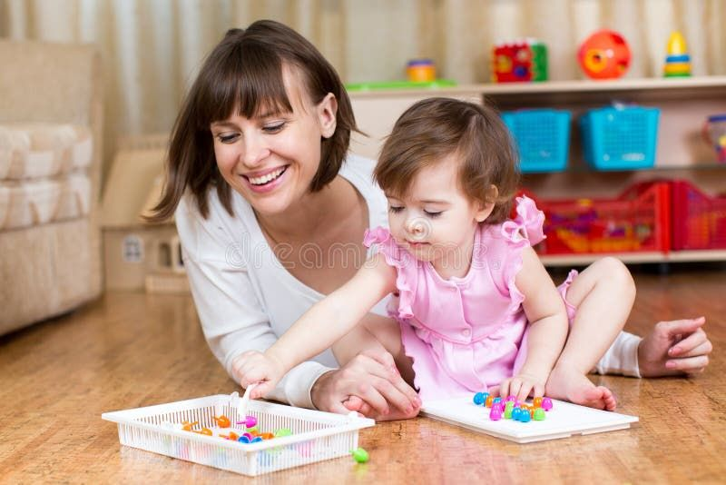
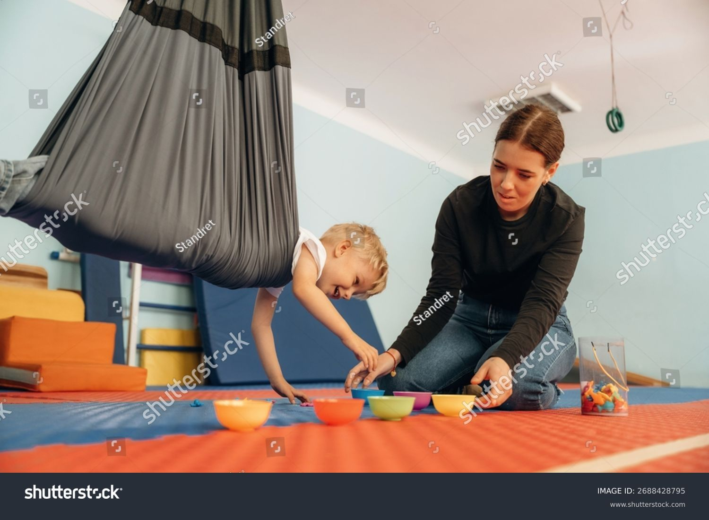

Professional ABA Therapy
Support
Without Borders.
We provide a unique "Wrap-Around" model that supports your child in school and at home across New Jersey and Ohio.
Consistent School Support.
ABA services in school help children with ASD progress at their own pace within a structured setting. Our therapists attend school with your child to provide:
-
1
1:1 Behavior Intervention Real-time redirection and support during classroom activities.
-
2
Social Skills Coaching Helping your child interact with peers during recess and group work.
-
3
IEP Goal Alignment Working closely with teachers and school staff in NJ & OH districts.

Predictable In-Home Care.
But what happens when they get home? Studies show children benefit greatly from generalization. That’s why our therapists work with your child both in school and at home.
-
1
Skill Generalization Using school-learned skills in a natural home environment.
-
2
Daily Living Mastery Independence in eating, dressing, and hygiene.
-
3
Sibling & Family Integration Helping the whole family unit communicate effectively.
Structured, Play-Oriented Growth.
While home and school provide natural settings, our specialized clinics offer a controlled environment designed specifically for intensive skill-building. Our clinics provide a warm, preschool-like atmosphere where your child can focus and flourish.
-
1
Social Immersion Controlled opportunities to interact with peers in a safe, therapist-guided social setting.
-
2
Distraction-Free Learning A structured environment that minimizes outside triggers, allowing for focused mastery of new tasks.
-
3
Early Intervention Focus Tailored preschool-prep activities that build the foundational skills needed for a successful transition to the classroom.

Evidence-Based Techniques
ABA in Action.
We turn everyday moments into milestones using proven clinical methods tailored to your child.
Positive Reinforcement
Encouraging progress by providing immediate positive feedback when a child masters a new skill or behavior.
Task Analysis
Breaking down complex skills—like hand washing or dressing—into small, manageable steps for easier learning.
Natural Environment Teaching
Integrating therapy into real-life situations, such as snack time or play, to ensure skills transfer to the real world.